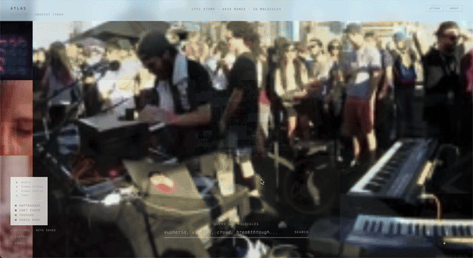

Live sets are rich, but hard to search by meaning.
A performance contains visuals, crowd energy, spoken fragments, sonic transitions, and recurring moods. Conventional search reduces that complexity to title, artist, chapter markers, or a transcript that misses what the scene feels like.
Atlas asks whether performances can be indexed as semantic matter instead of linear media. If retrieval happens at the level of concept, not timestamp, then a set becomes something closer to a navigable field than a file.

Performances decomposed into molecules instead of tracks.
The source corpus spans four sets: Kaytranada in Boiler Room Montréal, Chet Faker in Boiler Room Melbourne, Yousuke Yukimatsu in Boiler Room Tokyo, and Hania Rani at Cercle in Paris. Rather than preserve them as intact videos, Atlas decomposes each one into audio, still frames, video-native clips, and text molecules that can be compared inside one shared embedding space.
Those four molecule types become different forms of knowing: what the camera witnessed, what Gemini heard, what motion encoded, and what critical writing interpreted. The project reframes a performance as an assemblage of semantic traces rather than one continuous file.
Embed 1,788 atoms, then query the topology.
Atlas builds a molecular globe from 1,788 atoms embedded with Gemini Embedding 2 at 768 dimensions. Each atom belongs to one of sixteen molecules across the four source performances, with shared color families per set and distinct shapes per modality.
A query is converted into the same embedding space and matched via cosine similarity. The renderer separates raw cosine thresholds from normalized visual scaling, so cross-molecule gating stays honest while each molecule still retains internal contrast.
An assemblage engine then cuts a roughly one-minute sequence from the strongest matches, alternating raw video beats and narrated beats. The result is edited by semantic proximity rather than chronology, allowing a new clip to emerge from conceptual resonance across different performances.
Multi-modal retrieval rendered as a navigable object.
Semantic editing changes what “search” can mean.
Atlas suggests that retrieval can become a form of composition. Once results are ranked by meaning across modalities, search stops being a lookup utility and starts behaving like a curatorial engine.
The progress notes also surface a practical lesson: embedding resolution, threshold design, and asset hosting are not backend trivia here. They directly shape how legible the semantic field feels and whether the globe reads as thought or noise.